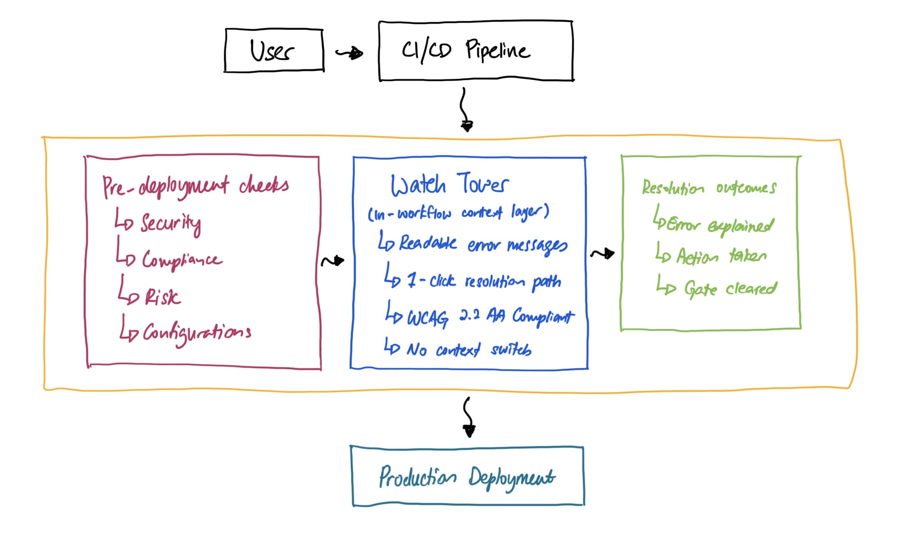

Less Friction, More Velocity: The Watch Tower
Engineering teams were technically capable but systematically slowed — not by skill gaps, but by a platform experience that created friction at every turn. The Watch Tower was one intervention in a broader experience strategy to make self-sufficiency the default for thousands of users globally. Designed as a pattern, not a feature, it established the interaction model for contextual guidance across the entire IDP.
Impact
Measurable outcomes across thousands of users
Significantly faster
New user deployment time, down from days
The majority
Reported higher clarity on deployment status
A significant portion
Decrease in support escalations globally
Most
Reported increased independence and autonomy
A fraction of the previous time
Resolution time for experienced users
Most
Found integrated "Actionable Steps" highly helpful
The App
Background
What is a pre-deployment check?
Pre-deployment checks verify service readiness against quality gates, compliance standards, security requirements, and configuration needs before any code is released to production. For thousands of users globally, this was a daily necessity — and a daily source of frustration.
Discovery
Understanding the real problem
Through interviews with users across seniority levels, a critical pattern emerged: an overwhelming "mental load" when navigating legacy compliance gates. Users were context-switching constantly between terminals, documentation wikis, and Slack channels just to understand a single error.
The key insight: users wanted solutions "where the work happened" — not additional dashboards to check.
The Problem
Three core friction points slowing every team down
The Onboarding Tax
New users faced a days-long learning curve just to get through their first deployment. This created a "shadow support" model where senior users spent a significant portion of their time guiding junior users through cryptic errors — draining team velocity.
The Dead-End Feedback Loop
Error messages used technical labels without context. Users had no idea which file was broken, who owned a given scorecard, or how to resolve a "legacy compliance gate" block. Multi-day delays for new hires, and significant time lost for experienced ones.
The Context Gap
Users were forced to hunt across fragmented systems — terminals, wikis, Slack, dashboards — just to piece together why a single gate was failing. The system provided no actionable path forward.
Senior users reported spending a large proportion of their week fielding questions from junior colleagues about deployment failures — time that could have been spent building. The support burden was structural, not individual.
Users described finishing their work only to hit an opaque compliance gate with no indication of who owned it or how to proceed. Releases stalled for days while users played detective across multiple departments and systems.
Affinity cluster from user interviews — quotes grouped into four recurring themes: Lost Velocity, Onboarding Friction, Mental Load, and Dead-end Feedback.
Journey Map
Before & after: a new hire's pre-deployment journey
To pressure-test the problem and the proposed solution, I mapped the end-to-end journey for a user new to the platform — before the Watch Tower, and after.
User journey map — Pre-deployment checks (before: Watch Tower)
Code review approved. Ready to push to production.
Triggers pipeline. Pre-deployment checks begin automatically.
One or more gates turn red. Error label surfaces in legacy UI.
Opens terminal, checks docs wiki, searches Slack, asks teammates.
Finds a senior user. Explains situation. Waits for response.
Sits idle. Release stalled. Senior user context-switches.
"Finally ready to ship."
"This should be quick."
"What does 'legacy compliance gate' even mean?"
"I've been at this for two hours. Nothing makes sense."
"I hate having to ask again. They're going to think I don't know anything."
"My release has been stalled for days while I play detective."
User journey map — Pre-deployment checks (after: Watch Tower)
Code review approved. Ready to push to production.
Triggers pipeline. Pre-deployment checks begin automatically.
One or more gates turn red. Watch Tower appears.
Reads plain-language explanation. Sees owner, sees action. Clicks one-click resolution link.
Follows guided steps independently. No Slack. No senior user needed.
Gate clears. Deployment proceeds. Done in under an hour.
"Finally ready to ship."
"This should be quick."
"A gate failed — but the platform is already telling me what happened."
"It's telling me exactly who owns it and what to do. That's all I needed."
"I didn't have to ask anyone. I just fixed it."
"The inline guidance transformed this from a dead-end into a guided path to success."
Strategy
Four objectives to reclaim engineering velocity
- Reclaim Engineering Velocity — Eliminate multi-day dead time by surfacing resolution paths at the point of failure
- Demystify Compliance — Translate machine-first labels into human-first insights users can actually act on
- Enable Developer Autonomy — Reduce shadow support dependency through self-service remediation
- Bridge the Onboarding Gap — Shorten the learning curve for new hires significantly
Design Decisions
What we considered — and what we rejected
Before landing on the Watch Tower, we stress-tested three alternative directions. Each solved a piece of the problem but failed the core test: keep the user in-flow, at the point of failure.
Systems Thinking
Placing the Watch Tower where the work happens
The critical design decision was where to intervene. Rather than adding a new surface, we placed the Watch Tower inside the user's existing deployment view — at the exact point of failure.

Watch Tower placement within IDP — sitting between pre-deployment gates and resolution outcomes, inside the user's existing workflow.
The Solution
From static reporting to the Watch Tower
The legacy interface functioned as a passive ledger — a static list of compliance states with high cognitive load, forcing users to hunt across fragmented systems for any resolution path.
The Watch Tower introduces a contextual, persistent UI component as a "source of truth" with two core pillars:
The "Why"
Cryptic error codes replaced with human-readable explanations. Every failure state tells the user exactly what went wrong and why — in plain language.
The "How"
A dedicated "Suggestion/Action" column with one-click deep links to resolution paths. No more detective work across multiple systems.
Before: Legacy interface — passive ledger, no actionable guidance | After: Watch Tower — contextual, persistent, actionable (light & dark mode)
Users reported that contextual guidance at the point of failure changed the experience fundamentally — turning dead-end error states into actionable resolution paths.
Impact
Measurable outcomes across thousands of users
Significantly faster
New user deployment time, down from days
The majority
Reported higher clarity on deployment status
A significant portion
Decrease in support escalations globally
Most
Reported increased independence and autonomy
A fraction of the previous time
Resolution time for experienced users
Most
Found integrated "Actionable Steps" highly helpful
Beyond the metrics, the Watch Tower drove a genuine cultural shift — from frustration and shadow support to a streamlined, self-sufficient engineering culture. Onboarding efficiency improved significantly, unlocking real velocity from day one.